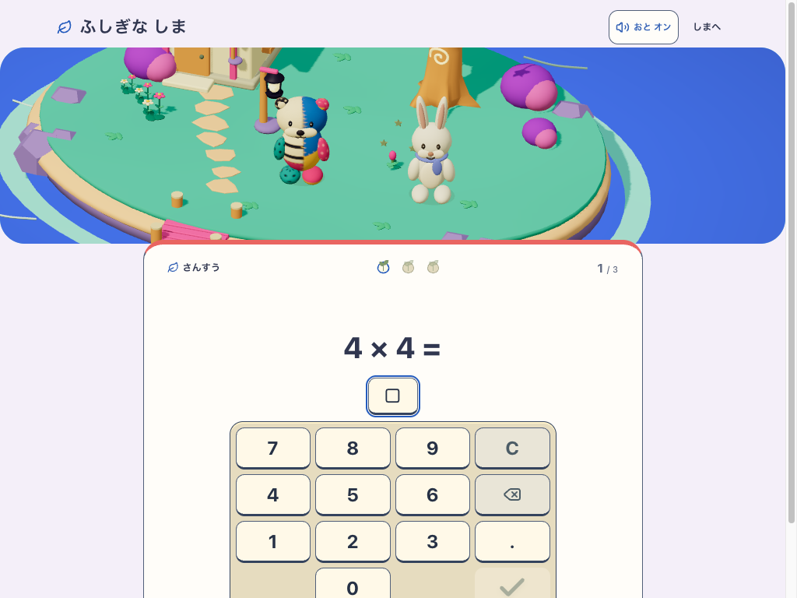

iPad横向きの問題画面
横画面では問題を左、解答欄と数字キーを右に配置。ヒント・お手本・次へ進む操作を画面内に保つ。Chromium / WebKitの20ケースを確認。実iPadでの確認は未実施。
現在の画像は、同時作業の「学習中は島を非表示」と筆算の入力方式切替を含む統合画面。今回の主変更は横向きの左右配置。すべてローカルの検証用プロフィールで、公開先の画面ではない。
修正前の再現例

修正前のCSSで再現。比較用の問題は現在の検証用プロフィールと異なる。現在の確認例
固定build: development-local:a07bca9a-ac1f-42e9-926e-5400b5a2900a
Delivery: mystic-island-v1 / Candidate: mystic-island-living-v5 / Learning: mystic-island-learning-v2
Service workerを無効にした新規context。端末のPWA更新・オフライン確認とは別の検証。
検証記録 · 全ケースの測定 · 配布物と画像のSHA-256